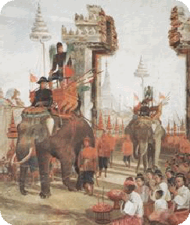
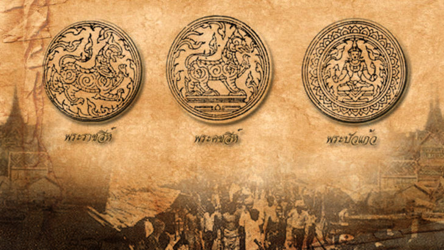

สมัยสุโขทัย
วิธีการปกครองในสมัยสุโขทัยนั้น นับถือพระเจ้าแผ่นดินอย่างบิดาของประชาชนทั้งปวงวิธีการปกครองเอาลักษณะการปกครองสกุลมาเป็นคติ บิดาปกครองครัวเรือน หลายครัวเรือนรวมกันเป็นบ้าน อยู่ในปกครองของพ่อบ้าน ผู้อยู่ในปกครองเรียกว่าลูกบ้าน หลายบ้านรวมกันเป็นเมือง ถ้าเป็นเมืองขึ้นอยู่ในความปกครองของพ่อเมือง ถ้าเป็นประเทศราชเจ้าเมืองเป็นขุนหลายเมืองรวมกัน เป็นประเทศอยู่ในความปกครองของพ่อขุน การปกครองของสุโขทัยจะเป็นแบบสมบูรณาญาสิทธิราชย์

สมัยอยุธยา
ระบอบการปกครองในสมัยอยุธยาเป็นระบอบสมบูรณาญาสิทธิราชย์ เหมือนกับสมัยสุโขทัย แต่แนวความคิดเกี่ยวกับพระมหากษัตริย์ได้เปลี่ยนไปตามคติพราหมณ์ซึ่งพวกขอมนำมา ลักษณะการปกครองแบบเทวสิทธิ์นี้ถือว่า พระมหากษัตริย์เป็นเสมือนเจ้าชีวิต นอกจากจะมีพระราชอำนาจเด็ดขาด สามารถกำหนดชะตาชีวิตของผู้อยู่ใต้ปกครองแล้ว ยังถือว่าอำนาจในการปกครองนั้นพระมหากษัตริย์ทรงได้รับจากสวรรค์ พระมหากษัตริย์ทรงเป็นเหมือนสมมุติเทพ เพราะฉะนั้นพระมหากษัตริย์ตามแนวความคิดแบบเทวสิทธิ์จึงทรงอำนาจสูงสุดล้นพ้น ลักษณะการปกครองเป็นแบบนายปกครองบ่าว หรือเจ้าปกครองข้า

สมัยรัตนโกสินทร์
รัตนโกสินทร์ตอนต้น มีการปฏิรูปในสมัยพระบาทสมเด็จพระจุลจอมเกล้าเจ้าอยู่หัวรัชกาลที่ 5 พระองค์ได้ทรงสนับสนุนให้มีการศึกษาอารยธรรมตะวันตก เป็นเหตุให้ได้รับทราบถึงความเจริญก้าวหน้า ในหลักการปกครองของตะวันตกและนำมาปรับปรุงในการปกครองของไทย
